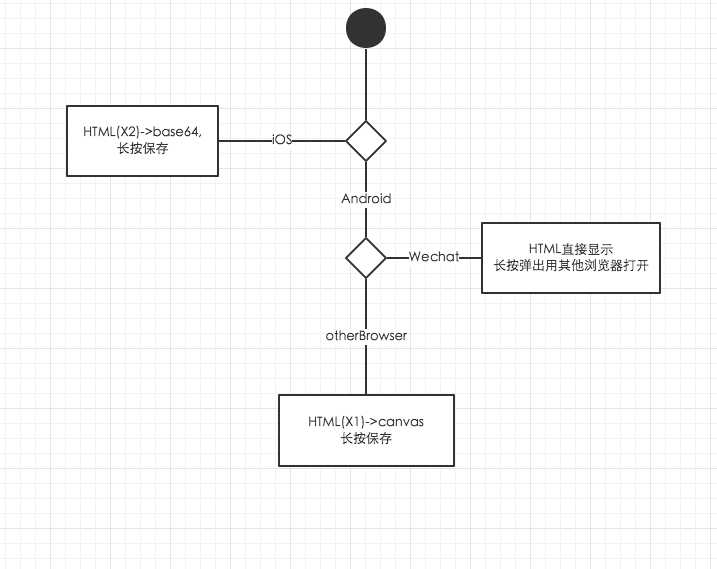

微信base64图片保存失败
1. 需求
报名成功后,通过后台ajax返回数据,生成一张邀请函
因为是报名成功的人都会生成一张邀请函,所以服务器生成图片不可靠,当n人同时报名,要同时生成n张邀请函,估计是服务会GG(其实是我不会服务器弄图片)
邀请函本来是通过另外一个下载按钮来自动下载的.
但是发现iOS在浏览器随便下文件..根本不现实(这个点也折腾了好久),最后跪着求产品,产品答应长按保存图片即可(当时我是很高兴的,后来发现还有很多坑..挨个跳,挨个填)
OK,所以最后思路定位,HTML->canvas->base64->img.src->长按保存
2. 解决思路
html由重构师,完成,其实HTML->canvas->base64->img.src->长按保存很容易实现
关键代码
//1. 引入html5canvas库
html2canvas($('#share_html'), {
onrendered: function(canvas) {
var newImg = document.createElement('img');
newImg.src = URL.createObjectURL(canvas.toDataURL());
var newbody = document.body.appendChild(newImg);
}
});
这样在iOS基本能完成需求,但是发现这样生成的图片清晰度太低了.
因为Retina屏是x2的,所以根据原本的HTML生成canvas清晰度很低,
解决方式很粗暴,在Retina中生成的HTML为2倍,这样生成的图片像素OK
在android中按照原来的来就OK(如果也根据2倍生成,android机很容易失去响应)
但是android微信不支持长按保存base64图片,所以但android微信长按图片弹出用其他浏览器打开
最后思路基本这样

3. 弯路
从上面这样一看,好像还挺简单的,但是这个功能..折腾了我快一个星期...
先看看git..的各种尝试..

先列举下我整个星期的思路
- 周三: 想通过原本设计的下载方式,点击按钮下载保存图片,尝试了3~4个小时后放弃.
- 周四: canvas生成图片不清,最后方案为HTML改为2倍
- 周五: 发现Android的Wechat保存图片失败,下面就开始各种高能,刚开始以为是没有img.src没有后缀名的原因,后来发现有些资源没有后缀,微信也能保存,所以排除这个想法.猜测应该是base64码微信无法保存的原因
周六: 分辨是Android还是Wechat的锅
但是我还是怀疑无法保存时Android还是Wechat的原因.用其他浏览器保存直接无响应,用Wechat显示保存失败,所以去看了看Android的log,
adb log

其实到这里,就能发现是Wechat的锅,原因:
第一张图是长按时,android给出的log,后面那张明显显示出微信
con.tencent.mm报错了,而并没有Android的ERROR或者Warn还有一个很明显就是谷歌搜
android browser long press save base64 image fail之类的关键词,搜出来都是Android WebView中的类似问题,并没有我们所遇到的问题但是只要搜
微信 长按 保存 base64图片,就会发现有很多苦逼的开发人员像我这样遇到这些问题,然而上面并没有解决方案- 微信保存图片能显示保存图片失败,而其他浏览器直接奔溃,其实是因为微信压根没想下载这个图片,而其他浏览器本来想下载这图片的,太大了(原本拿HTML X2 400+KB来下载,X1 70+KB基本无这个问题),所以导致奔溃
周日: 不用base64
我也怀疑过为啥base64不行,会不会跟编码有过,因为base64有一个可选位置,可以填写编码方式,我设了下改成UTF-8..不行...所以就想想base64的其他方法
如果不用Base64,基本方案只有Blob或者LocalFileSystem
Blob的基本实现思路是把base64转换为二进制文件保存在浏览器中,blob的话iOS(也可以保存....),但是Android(Blob下载超时,可能因为Blob的Request不会包含Host)都无法保存下来.
核心代码
function canvansToBlob(){
function b64toBlob(b64Data, contentType, sliceSize) {
contentType = contentType || '';
sliceSize = sliceSize || 512;
var byteCharacters = atob(b64Data);
var byteArrays = [];
for (var offset = 0; offset < byteCharacters.length; offset += sliceSize) {
var slice = byteCharacters.slice(offset, offset + sliceSize);
var byteNumbers = new Array(slice.length);
for (var i = 0; i < slice.length; i++) {
byteNumbers[i] = slice.charCodeAt(i);
}
var byteArray = new Uint8Array(byteNumbers);
byteArrays.push(byteArray);
}
var blob = new Blob(byteArrays, {type: contentType});
return blob;
}
var contentType = 'image/png';
var b64Data = '...base64码';
var blob = b64toBlob(b64Data, contentType);
var blobUrl = URL.createObjectURL(blob);
var img = document.getElementById('canvasToBlob');
img.src = blobUrl;
document.body.appendChild(img);
LocalFileSystem也是相同原理,不过W3C在2014明确放弃了LocalFileSystem,可能由于安全原因吧,不过老外用这个写了个简单的linux,还挺好玩http://www.html5rocks.com/en/tutorials/file/filesystem/
最终的效果测试可见http://test.manager.grouplus.cn/canvas.html

很遗憾,最后都没很好的实现.
4. 收获
- canvas基本
- blob基本
- LocalFileSystem基本
- base64基本
- Android机+iOS真机调试